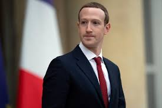
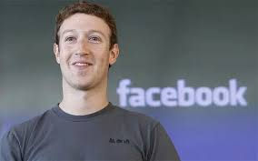

Mentor
Meet Mark Zuckerberg: Your Expert Guide
About Mark Zuckerberg:
Mark Zuckerberg, the co-founder and CEO of Facebook, is a visionary leader and innovator in the tech industry. With his groundbreaking work in social networking, he has revolutionized how people connect and communicate globally. As your mentor, Mark brings unparalleled expertise and insights into entrepreneurship, technology, and leadership.
Biography:
Mark Zuckerberg is a Harvard dropout who founded Facebook in 2004 from his dorm room. Under his leadership, Facebook has grown into one of the world's largest and most influential tech companies, with billions of users worldwide. Mark's visionary approach to technology and his commitment to innovation have cemented his reputation as a trailblazer in the digital age.
Professional Journey
After launching Facebook, Mark led the company through various stages of growth, including strategic acquisitions, product expansions, and navigating complex challenges. His journey from a college student with a simple idea to a global tech icon is a testament to his resilience, creativity, and unwavering determination.
Area of Expertise:
Mark Zuckerberg is a recognized expert in entrepreneurship, technology, and business strategy. His deep understanding of user behavior, product development, and market dynamics has been instrumental in Facebook's success. Additionally, his insights into emerging trends, such as artificial intelligence and virtual reality, are invaluable for navigating the rapidly evolving tech landscape.
Philosophy and Approach
Mark Zuckerberg's approach to leadership is guided by a commitment to innovation, transparency, and long-term vision. He believes in the power of technology to bring people together, foster meaningful connections, and drive positive change in society. Mark's philosophy emphasizes continuous learning, adaptability, and embracing challenges as opportunities for growth.
Accomplishments and Recognition
Mark Zuckerberg has received numerous accolades and recognition for his contributions to technology and entrepreneurship. He has been named among the world's most influential people by Forbes and Time magazine and has received honorary degrees from prestigious institutions for his impact on society.